Inputs And Outputs
Summary
Elements384
Nonzero BV/TV50
BV/TV min mean max0.0000 / 0.0588 / 1.0000
Full BV/TV elements4
Young modulus min max MPa0.00 / 8534.64
Sample voxels min max77 / 83
Input CT Slices
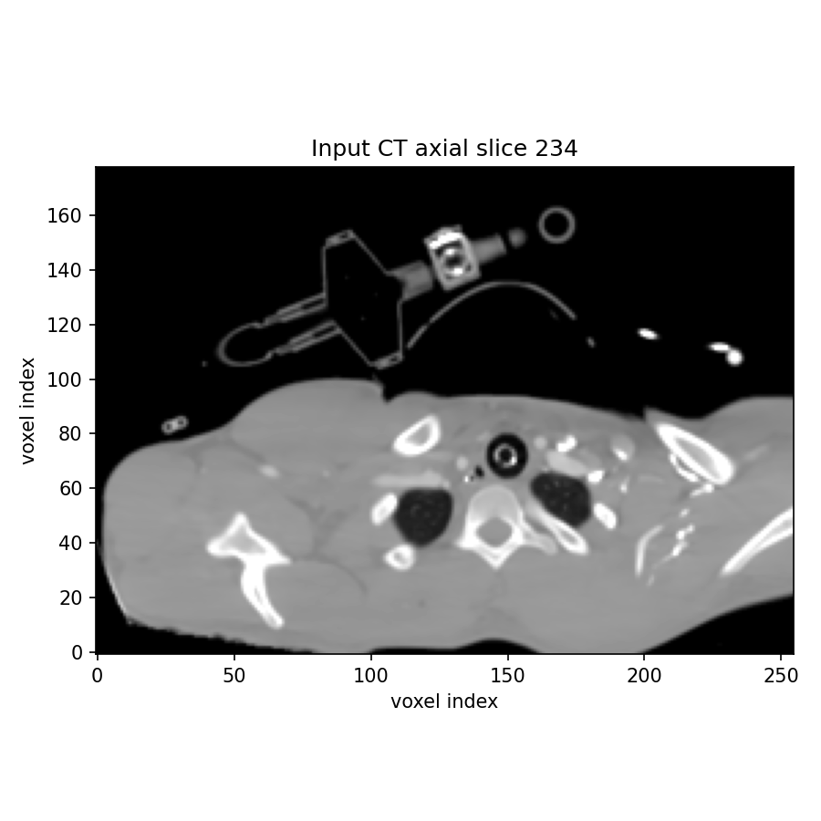
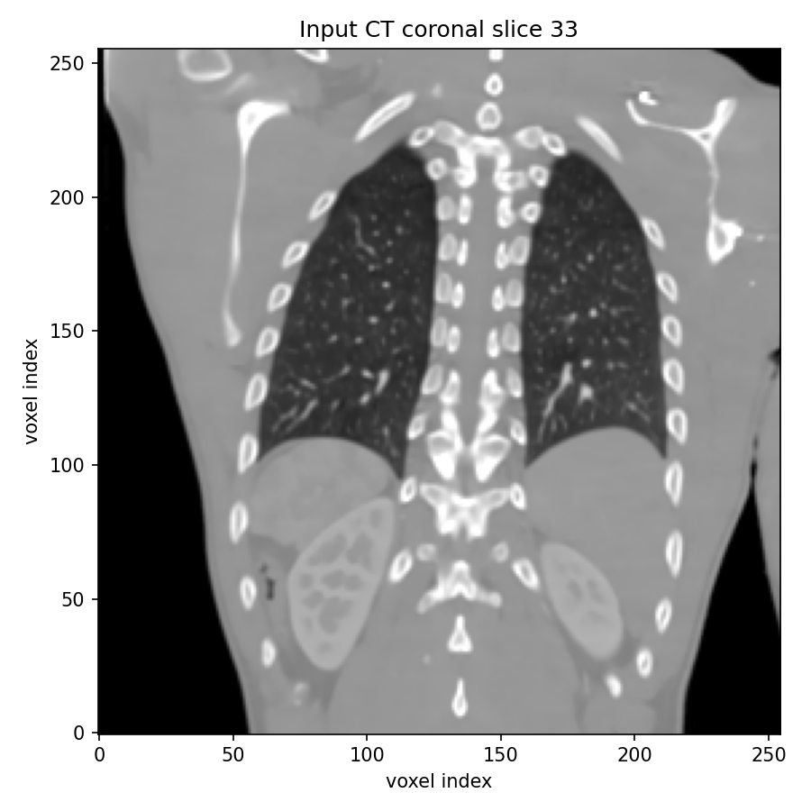
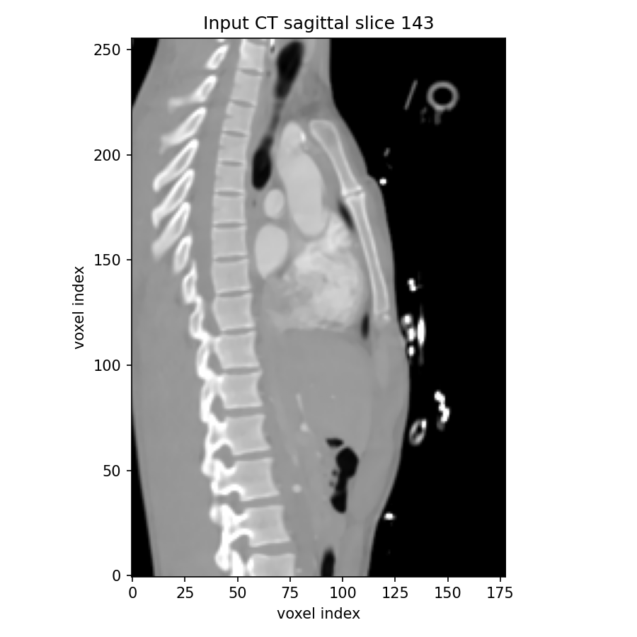
Segmentation Used For BV/TV
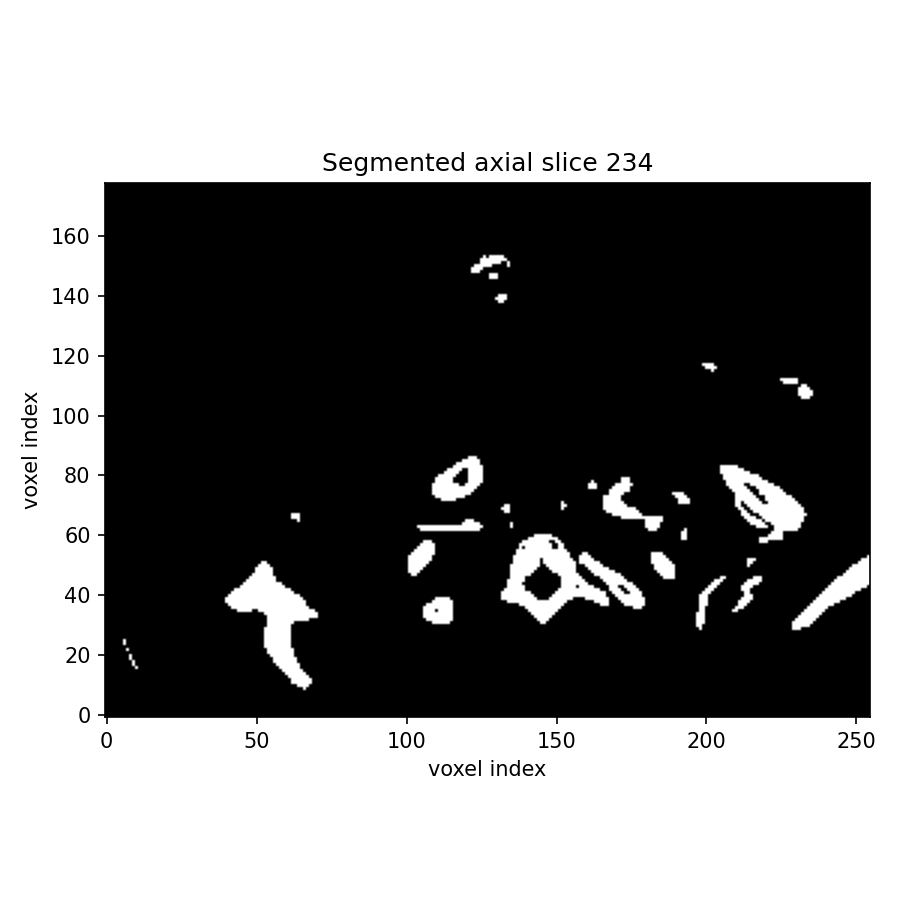
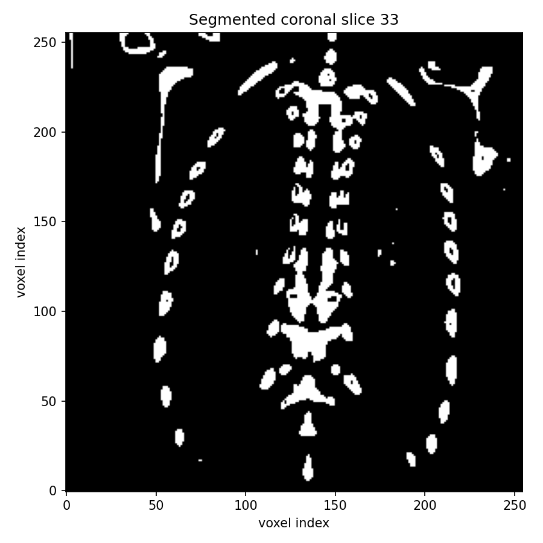
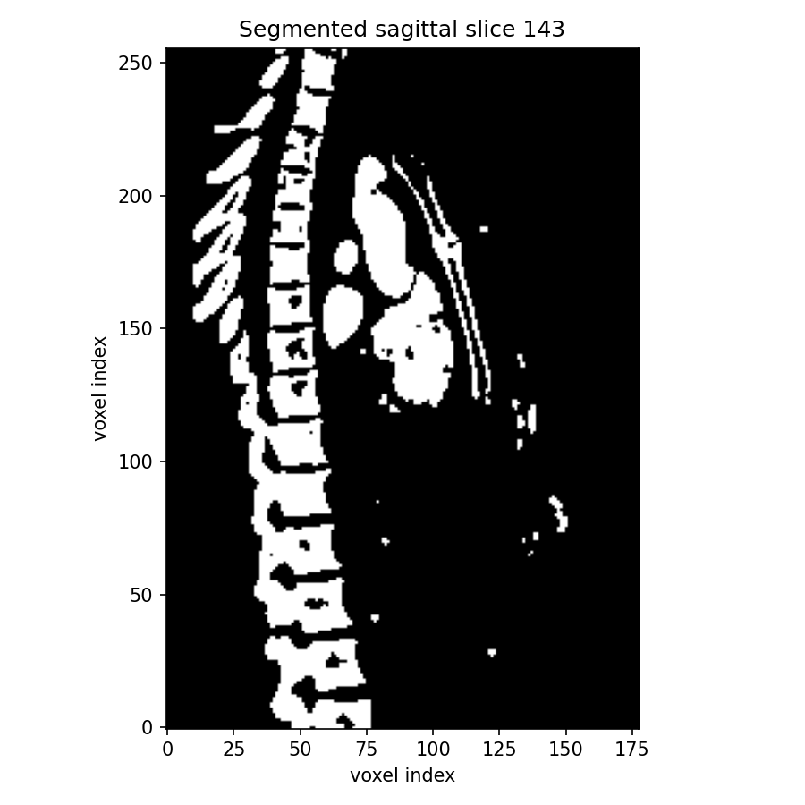
Mapped Output On CT
Grey markers indicate nearby sampled FE element centroids with BV/TV = 0. Colored markers indicate positive BV/TV values.
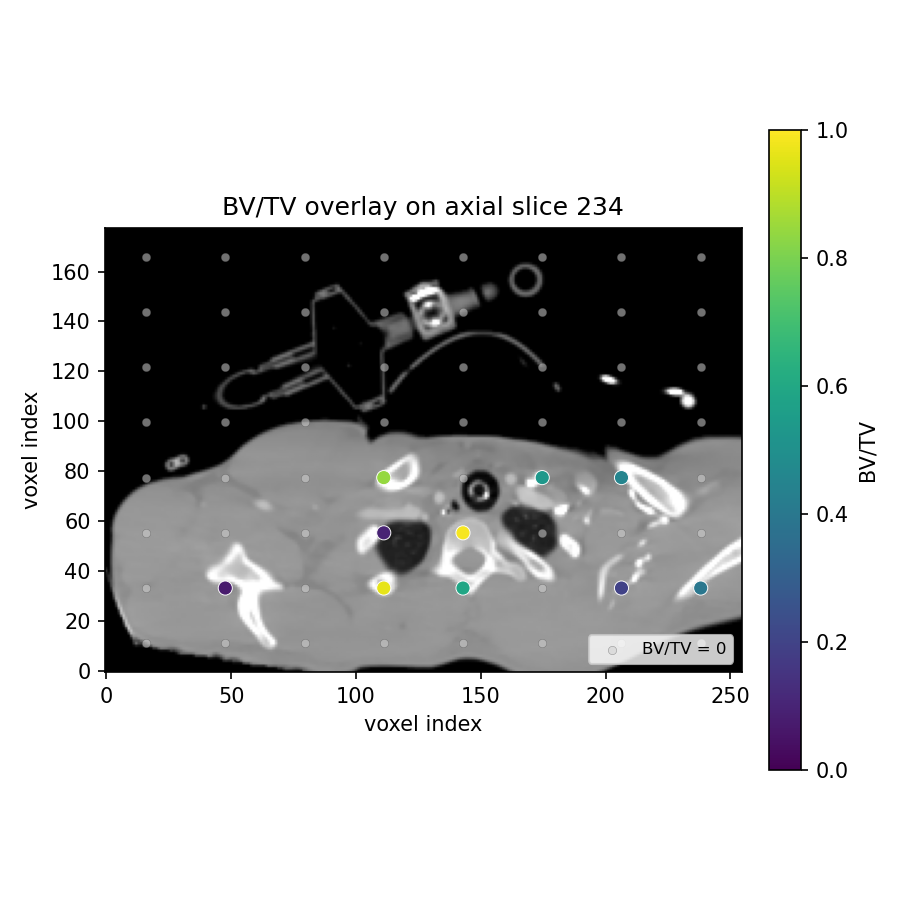
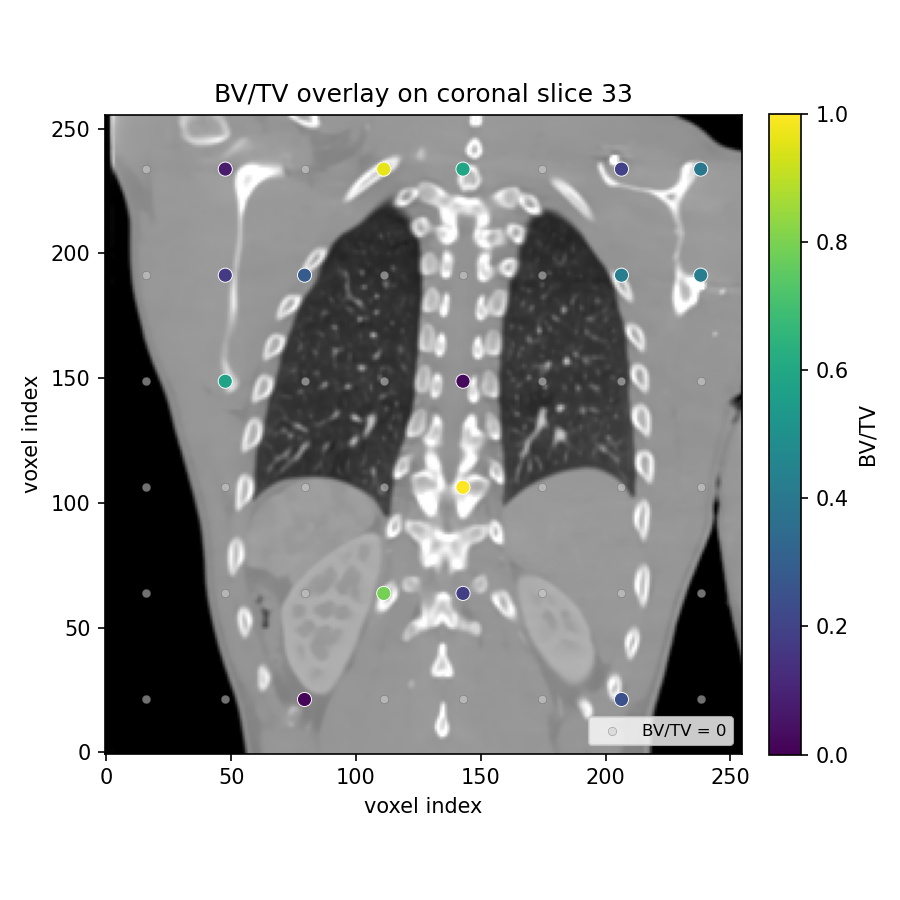
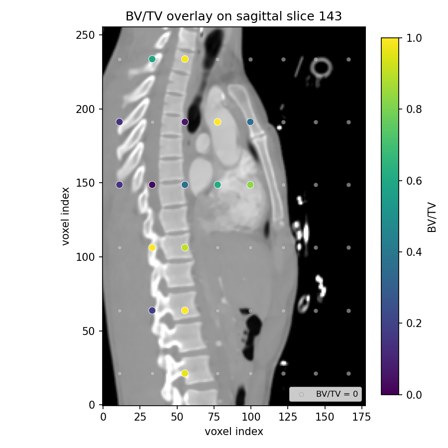
Output Distributions
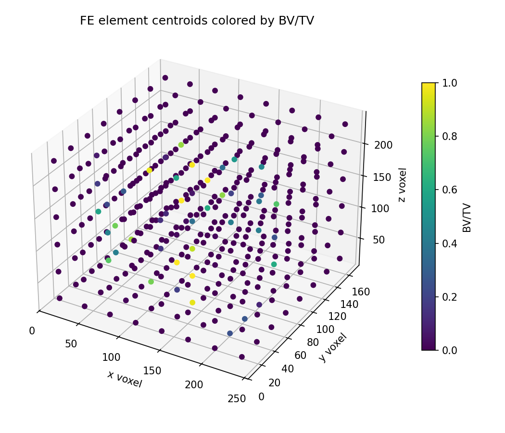
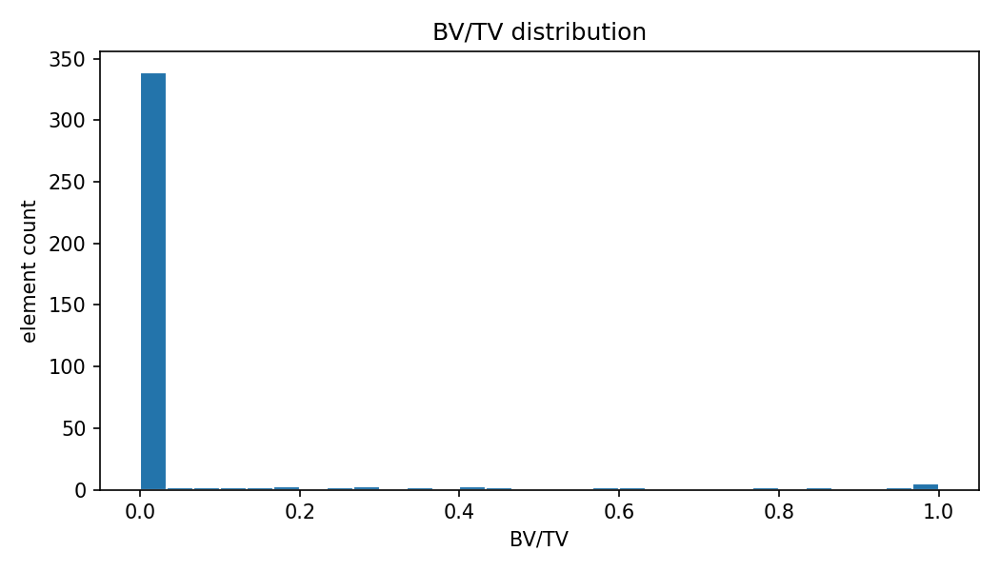
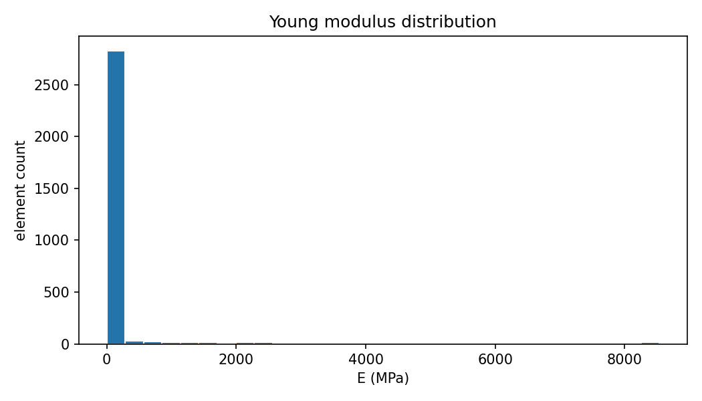
Highest BV/TV Elements
| Element | BV/TV | E MPa | Sample voxels |
|---|---|---|---|
| 85 | 1.0000 | 8534.64 | 83 |
| 141 | 1.0000 | 8534.64 | 81 |
| 220 | 1.0000 | 8534.64 | 82 |
| 285 | 1.0000 | 8534.64 | 82 |
| 341 | 0.9880 | 8367.67 | 83 |
| 21 | 0.9639 | 8037.57 | 83 |
| 332 | 0.9630 | 8025.44 | 81 |
| 149 | 0.9036 | 7234.99 | 83 |
| 90 | 0.8571 | 6638.38 | 77 |
| 348 | 0.8415 | 6441.58 | 82 |
| 229 | 0.8293 | 6290.11 | 82 |
| 76 | 0.7901 | 5813.37 | 81 |